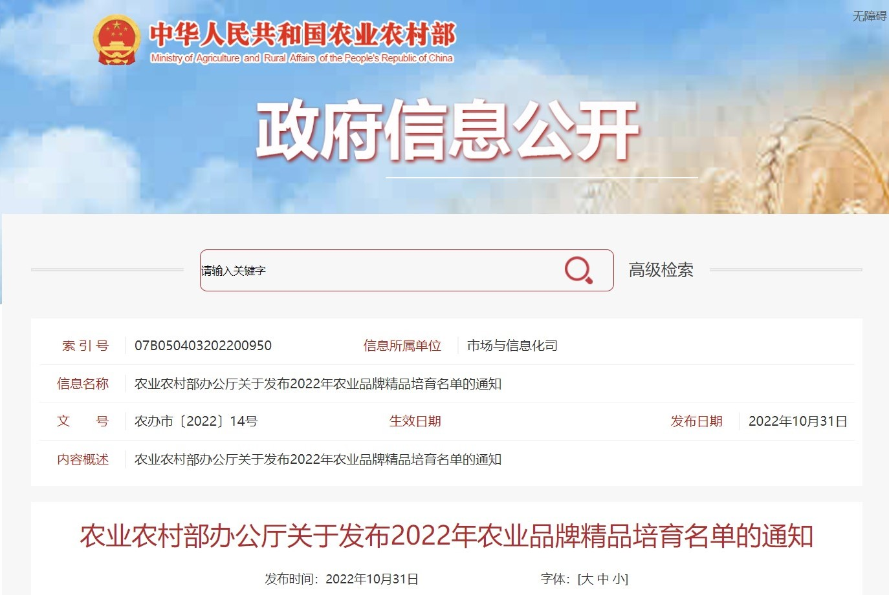
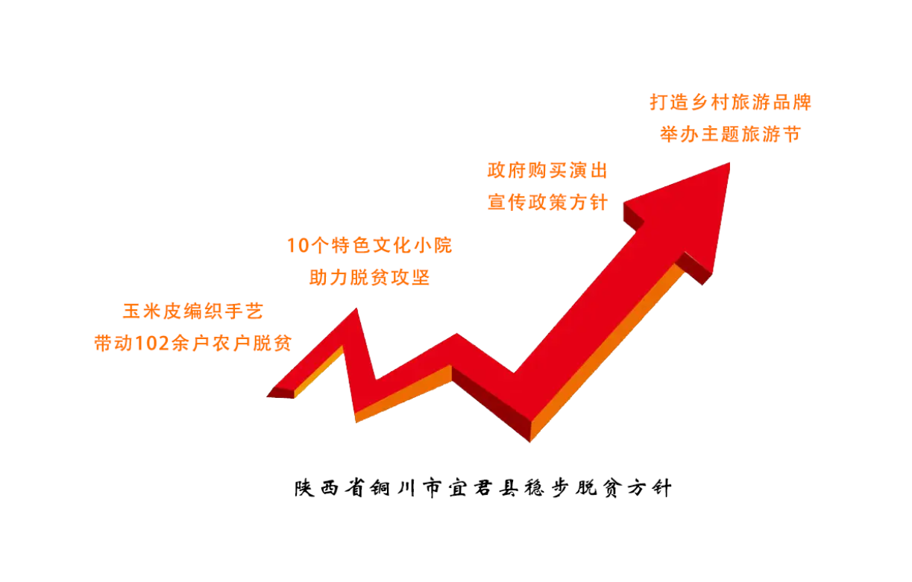

十年
会发生怎样的故事
时钟秒针转动315360000次
一棵梧桐树长高10000mm

十年时光，“拾光”跨越，看见产业兴旺。
处在黄土高原的陕甘宁，有着一个属于自己的独特十年故事。
十年之约，“拾光”跨越，看见产业振兴发展。
陕甘宁特色农产品，电商、文旅产业兴旺发展，历经十年走向振兴，这是一场壮举
“十年”
一个伟大的时间刻度。
放大它，中间又有着无数个鲜活的故事,陕甘宁的十年亦是如此。
十年后,陕甘宁产业兴旺,武功县之外,这片土地叙写着独特的十年振兴故事。
2018年，首届中国贫困地区特色农产品品牌推介洽谈会在北京召开，
“挖掘优质农特产品、打造明星品牌，促进农特产品产销对接”
生产什么产品？又如何把生产出来的产品销售出去？

2022年10月，农业农村部公布农业品牌精品培育计划，洛川苹果、定西马铃薯......入选这一计划。 陕甘宁立足当地，结合当地气候条件和地理环境，培育产于本地的特色农（副）产品。特色农产品的培育使陕甘宁在脱贫路上逐步迈向产业兴旺发展，也为脱贫后陕甘宁接续乡村振兴提供了长久活力。
靠自己的双手收获了满满的成果，又如何把自己的劳动成果转化为实实在在的幸福呢？
武功县位于陕西省关中平原中部，地处“一线两带”“西咸一体化”“关中平原城市群”建设圈的中心叠加地带,在农村电商发展中突出表现着不一样的关中平原形象……
截至２０１８年底，武功 县 电 商 企 业 达３００余家，快 递 公 司４０余家，个体网店更是达到１０００余家。与此同时，农产品电商销售额稳步增长，仅２０１８年上半年就达到１５．５８亿元。先后荣获多项荣誉，形成了“买西北卖全国”的商业模式，并入选全国县域电商八大模式，被称为“西北电商第一县”。
利用电商平台因地制宜扩大种植规模
选择符合农业新业态的就业创业工程
为农户参与竞争性网络市场提供互通平台
协助引导贫困人口网络学习、产品推广等技术性引导
跨领域合作扶贫
|
顺应着电子产业化时代的洪流，通过媒体、会议、培训、交流、采购代销等进行全渠道宣传推广，统一标准、完善检测、分等定级、严格品牌商标使用的同时致力于拓宽和稳定网货采供渠道。 |
依托得天独厚的“买西北·卖全国”的地理优势，武功县着力推进“武功产·武功造”，“立足陕西、辐射西北、面向丝绸之路经济带”，培育龙头企业:“西域美农”“云创智境”“生鲜云仓”“大漠盛宴”“一果倾城”等电商企业和陕果集团、绿益隆、兵垦果园、金沙河、龙门食品等生产企业落地生根，打造众多品牌化产品！2021年网络零售额达50.6亿元。
走向振兴的路上，除却电商模式这一新鲜的尝试
历史文化也在新时代的背景下熠熠生辉......
|
2008年被评为国家一级博物馆的延安革命纪念馆同时也是国家5A级景区。
|

「除大型主题红色文旅资源，陕甘宁部分地区还基于当地特色
打造文旅资源，开发特色文旅产业。」
截至2020年，甘肃省乡村旅游吸引了国内155家文旅企业参与建设，累计投资12亿元。此外，为97万户、417万贫困人口发放精准扶贫贷款400亿元。目前已建成300个省级乡村旅游示范村、32个全国乡村旅游重点村、10个田园综合体，推出60多条乡村旅游精品线路，累计发展乡村旅游专业村1053个、合作社301个,培训乡村旅游从业人员3.6万人次，通过发展乡村旅游带动55.46万贫困群众实现脱贫。
 |
2006年被列入第一批国家级非物质文化遗产名录的庆阳香包是甘肃省庆阳市独特的地方名片之一，蕴意着人们祈求福寿平安、爱情幸福及对美好生活的憧憬与向往。非遗传承人刘兰芳将非遗文化与扶贫结合，主要以留守妇女和残疾人为主面向社会开班授徒。 |
挖掘整合村、社区文化资源，带动周边群众参与文化建设，铜川市共建成10个特色文化小院，包含剪纸、秦绣、书画等多个种类。目前，3个村入选全国乡村旅游重点村（马咀村、何家坊村、淌泥河村），省级旅游特色名镇7个，省级乡村旅游示范村有21个，市级乡村旅游示范村35个，四星级农家乐35家，星级民宿9家。 |
|  | 采取“景区+公司+行政村”的模式，将旅游扶贫产业资金中的70%作为行政村发展产业扶贫参股资金注入景区建设发展，30%用于景区基础设施建设等,铜川乡村旅游的知名度和吸引力不断提升。 |
埋下一粒种子，最好的时间就是在十年前和今天。 十年前埋下的种子已经长成参天大树，稳稳守护在通向人民幸福的道路上；而今天我们埋下第二颗种子，在奔向中国梦的征途中，也将生根、发芽……
指 导 老 师
张宏邦
制 作
图片来源
参考资料
XXXXXXXXXXXXXXXXXX
XXXXXXXXXXXXXXXXXXXXXXXXXXXXXXXXXX
XXXXXXXXXXXXXXXXXXXXXXXXXXXXXXXXXXXXXXXXXXXXXXXXXX
XXXXXXXXXXXXXXXXXXXXXXXXXXXXXXXXXXXXXXXX
XXXXXXXXXXXXXXXXXXXXXXXXXXXXXXXXXXXXXXXXXXXXXXXXXXXXXXXXXXXXX
XXXXXXXXXXXXXXXXXXXXXXXXXXXXXXXXXXXXXXXXXXXXXXXXXXXXXXXX.
数据来源
联系邮箱：runner@stu.xjtu.edu.cn
©西安交通大学 · 新闻与新媒体学院，2022